AI-Driven Weather Forecasting: Transforming Meteorology with Machine Learning
Table of Contents
- Introduction
- Numerical Weather Prediction
- FourCastNet
- Pangu-Weather
- GraphCast
- Model Comparison
- Ethical Implications
- Conclusion
- References
1. Introduction: When AI Meets the Atmosphere
Every day, weather forecasts quietly shape our lives. A storm warning can empty beaches and stock supermarket shelves. A temperature spike can shift energy demand across entire continents. In agriculture, aviation, disaster response, and climate science, accurate weather prediction isn’t just useful—it’s vital.
For decades, Numerical Weather Prediction (NWP) has been the gold standard. These physics-based models simulate the Earth’s atmosphere by solving massive systems of partial differential equations. They are scientifically rigorous but also notoriously expensive—requiring supercomputers, hours of computation, and still falling short when it comes to fast-changing or extreme events.
But a new kind of forecast is on the horizon. Fueled by advances in deep learning and access to decades of reanalysis data, AI-based weather models are beginning to rival—and in some cases surpass—traditional systems. These models don’t simulate the laws of physics directly. Instead, they learn the behavior of the atmosphere from data, identifying patterns invisible even to trained meteorologists.
In this blog, we dive into the rising frontier of AI-driven weather forecasting. We’ll explore leading-edge systems like GraphCast, Pangu-Weather, and FourCastNet—each pushing the boundaries of speed, resolution, and skill. Along the way, we’ll also examine the ethical challenges these models raise: fairness across regions, interpretability, public trust, and the role of humans in an increasingly automated forecasting landscape.
What happens when machine learning begins to understand the sky?
Let’s find out.
2. Numerical Weather Prediction: Foundations, Evolution, and Grand Challenges
For over 70 years, Numerical Weather Prediction (NWP) has served as the scientific foundation of operational forecasting. By solving partial differential equations (PDEs) based on the conservation of mass, momentum, energy, and moisture, NWP simulates atmospheric dynamics across the globe.
From Theory to Operational Systems
The idea of predicting weather via physics-based equations was introduced in the early 20th century by Cleveland Abbe and Vilhelm Bjerknes. Practical forecasting became feasible in 1950 when the first numerical hindcast was executed using the ENIAC computer at Princeton University. Real-time forecasting began in 1954, and by 1979, the ECMWF Integrated Forecasting System (IFS) was launched, setting a global standard for medium-range weather prediction.
How NWP Works
Global NWP models divide the Earth into a three-dimensional grid, with horizontal resolution in latitude–longitude and vertical levels based on height or pressure. The evolution of atmospheric variables is calculated by numerically solving PDEs at each grid point.
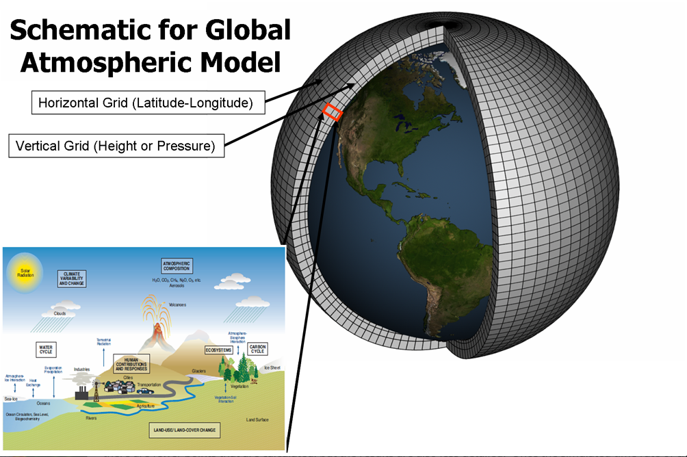
Structure of a global atmospheric model showing horizontal and vertical grids.
Image source: NOAA GFDL.
Modern systems like ECMWF’s IFS run:
- At 0.1° spatial resolution with ~2 million grid points
- With ~200 vertical levels
- Using 10-minute timesteps, twice daily, for 10-day forecasts
Because the atmosphere is chaotic and sensitive to initial conditions, NWP employs ensemble forecasting. By running multiple simulations with slight variations in initial inputs, NWP systems generate a spread of possible outcomes, providing probabilistic information for decision-makers.
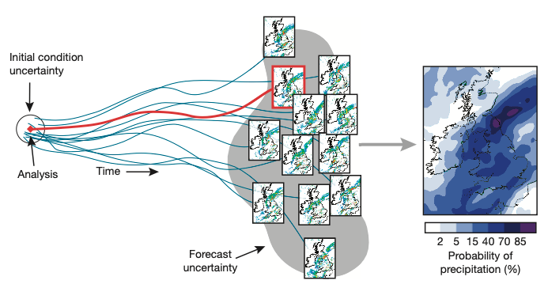
NWP accuracy has improved significantly in recent decades, driven by better models, increased computing power, and improved data assimilation. Also, the prediction time has gradually increased from 3 days and 5 days to 7 days or even 10 days.
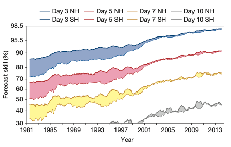
Challenges in NWP
Despite its success, NWP is reaching computational and structural limits. Major challenges include:
- Complexity – Earth system processes like turbulence, cloud microphysics, and ocean–atmosphere coupling are difficult to model accurately.
- Resolution – Higher resolution improves accuracy but increases compute demands exponentially.
- Dimensionality – Trillions of variables make simulations memory- and compute-intensive.
- Ensemble Size – More ensemble members improve reliability but amplify cost.
- Scenario Diversity – Climate models must simulate a wide range of possible futures (e.g., emissions paths).
- Throughput – Real-time forecasting requires high-speed computing pipelines.
- Scalability – As resolution increases, data movement, not computation, becomes the bottleneck.
- Interactivity – Policymakers demand real-time, interactive “digital twins”—which traditional NWP systems struggle to support.
A Paradigm Shift: From Equations to Data
NWP’s equation-based precision is unmatched, but its scalability and computational demands are increasingly constrained. In response, a new wave of AI-based weather models is emerging—trained not to simulate physics explicitly, but to learn directly from decades of atmospheric data.
Prominent examples include:
- FourCastNet (2022) – by NVIDIA and Lawrence Berkeley National Lab
- Pangu-Weather (2023) – by Huawei
- GraphCast (2023) – by Google DeepMind
These models are trained on ERA5 reanalysis and generate high-resolution global forecasts in seconds, using a fraction of the energy and hardware required by traditional numerical models. Their performance increasingly rivals—and sometimes exceeds—state-of-the-art NWP systems on key metrics like RMSE and anomaly correlation.
What’s more, these models are now being operationally visualized and evaluated through the ECMWF AI Forecast Viewer, with direct access to their outputs:
Together, these breakthroughs mark the emergence of a data-driven forecasting paradigm—faster, more efficient, and increasingly critical in a world shaped by climate extremes and the need for timely, actionable information.
3. State-of-the-Art AI Models for Weather Forecasting
3.1 FourCastNet: A DL model with comparable accuracy to IFS
FourCastNet, developed by NVIDIA, is a pioneering AI-driven global weather forecasting model that leverages deep learning and spectral methods to deliver high-resolution, medium-range forecasts. By integrating the Adaptive Fourier Neural Operator (AFNO) into its architecture, FourCastNet efficiently captures complex atmospheric patterns, offering rapid and accurate predictions that rival traditional numerical weather prediction models.
Model Architecture
At the heart of FourCastNet is the Adaptive Fourier Neural Operator (AFNO), a novel architecture designed to efficiently capture global weather patterns across space and time. AFNO extends the Fourier Neural Operator (FNO) by incorporating learnable adaptive filters in the frequency domain, enabling efficient and scalable modeling of complex geophysical phenomena.
The diagram below (from FourCastNet: arXiv:2202.11214) illustrates the complete architecture—from input preprocessing to spectral processing and output generation—along with extensions for fine-tuning and precipitation modeling.
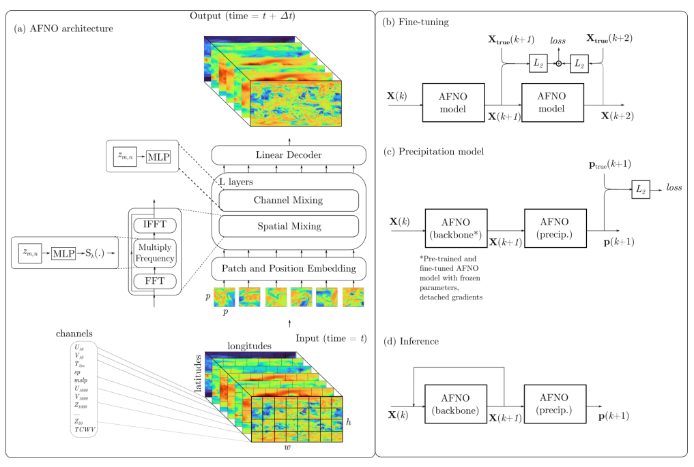
Traditional convolutional or attention-based models struggle to efficiently model long-range spatial dependencies. In contrast, AFNO operates in the frequency domain via Fast Fourier Transform (FFT), enabling global mixing of spatial information at lower computational cost.
The key steps in AFNO (refer to panel (a) in the figure) are:
-
Patch & Positional Embedding:
The model ingests 2D meteorological fields (e.g., U₁₀, V₁₀, T₈₅₀, Z₅₀₀) as multi-channel tensors and embeds spatial information via patch-based position encodings.
-
Fourier Transform (FFT):
Data is projected into the frequency domain using 2D FFT, yielding complex-valued spectral features.
-
Block Diagonalization:
Spectral channels are grouped into frequency blocks. This design reduces the dimensionality of mixing and enables efficient shared weight application.
-
Block-wise MLP Filtering:
Each frequency block is passed through a shared MLP to perform adaptive frequency filtering. This is where AFNO differs from standard FNOs—weights are shared across blocks to encourage generalization.
-
Soft Shrinkage:
A non-linear regularization step reduces the influence of insignificant frequency components, improving robustness.
-
Inverse FFT (IFFT):
The filtered spectral representation is transformed back to the spatial domain.
-
Residual Connection:
The output is added to the input to preserve low-frequency structure and ensure stable gradients.
To make the process more concrete, the following pseudocode summarizes the AFNO computation:
def AFNO(x):
bias = x # Residual connection
x = RFFT2(x) # Step 2: Convert to frequency domain
x = x.reshape(b, h, w//2+1, k, d//k) # Step 3: Block diagonalization
x = BlockMLP(x) # Step 4: Apply shared MLP
x = x.reshape(b, h, w//2+1, d) # Restore shape
x = SoftShrink(x) # Step 5: Regularize
x = IRFFT2(x) # Step 6: Back to spatial domain
return x + bias # Step 7: Residual connection
def BlockMLP(x):
x = MatMul(x, W_1) + b_1
x = ReLU(x)
return MatMul(x, W_2) + b_2
Training and Performance
FourCastNet is trained in two stages—pretraining and fine-tuning—followed by the addition of a precipitation prediction module.
-
Pretraining: The model first learns to forecast the immediate next atmospheric state based on current inputs. It is trained to minimize the difference (using mean squared error) between the predicted and actual next time step, focusing on single-step accuracy.
-
Fine-tuning: Next, the model is trained to make forecasts across multiple future steps in sequence. For example, it predicts the next two time steps, compares them to the actual values, and updates its weights to reduce the error across both. This helps the model reduce the buildup of errors over longer forecast sequences.
-
Precipitation Head: To improve rainfall forecasting, a separate component is added after the main model has been trained. This lightweight module takes the predicted atmospheric state and estimates rainfall, improving precipitation accuracy without changing the main model.
During inference, FourCastNet generates forecasts by recursively feeding each output back as input for the next prediction—starting from an initial observed state and producing a sequence of predictions several days into the future. This autoregressive design allows the model to generate efficient and coherent forecasts up to 7 to 10 days ahead.
FourCastNet was benchmarked against ECMWF’s Integrated Forecasting System (IFS) using:
- Anomaly Correlation Coefficient (ACC) – measures how well predicted anomaly patterns match observations.
- Root Mean Squared Error (RMSE) – measures average forecast error.
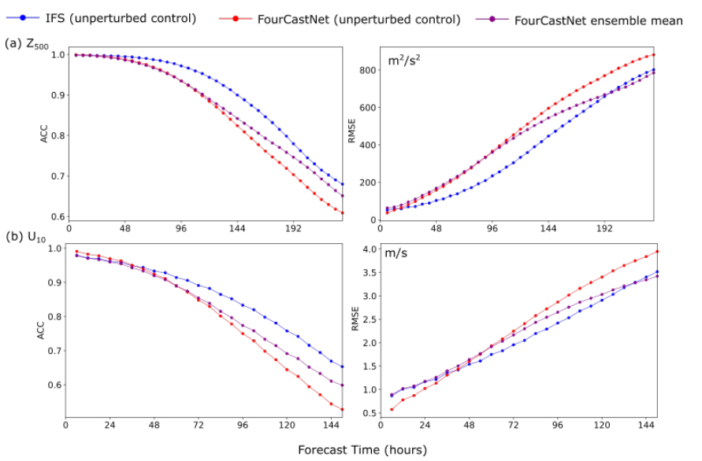
Even though IFS slightly outperforms FourCastNet at long horizons, the ensemble mean version of FourCastNet significantly narrows the gap — highlighting its strong potential for probabilistic forecasting with a small computational footprint.
Extreme Weather Prediction
FourCastNet has demonstrated strong performance in forecasting extreme weather events such as tropical cyclones and heavy rainfall. Its AFNO-based architecture, combined with autoregressive inference, enables the model to capture both large-scale atmospheric flow and localized severe phenomena.
A compelling example is its multi-day forecast of Typhoon Mangkhut (山竹) in 2018. Using open-source tools from HFAI Lab, researchers successfully reproduced the storm’s track and associated moisture fields. The model not only followed the cyclone trajectory with high accuracy, but also captured spiral structures in Total Column Water Vapour (TCWV)—a key indicator of cyclone intensity and rainfall potential.
These results highlight FourCastNet’s potential for fast, high-resolution forecasting in early warning systems and disaster preparedness.
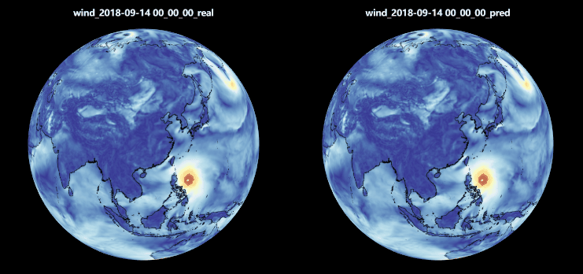
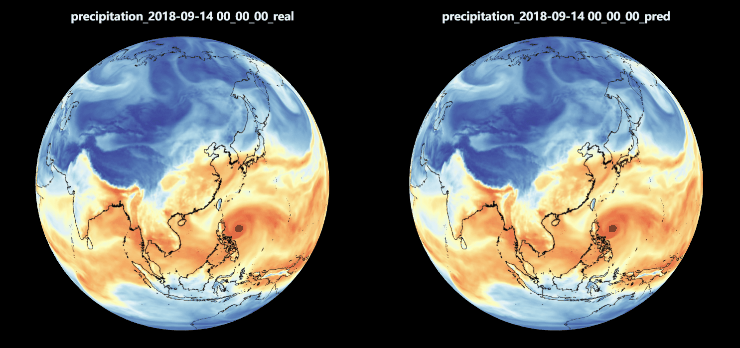
3.2 Pangu-Weather: A ViT-based 3D Weather Foundation Model
Huawei Cloud’s Pangu-Weather marks a major milestone in AI-powered weather forecasting. It is the first publicly released model to outperform traditional numerical weather prediction (NWP) systems—such as the ECMWF’s High-Resolution (HRES)—across the entire range of 1-hour to 7-day forecasts, while achieving speeds over 10,000× faster.
Model Design and Architecture
The strength of Pangu-Weather stems from a dual architectural innovation:
- A 3D Earth-Specific Transformer (3DEST) optimized for atmospheric geospatial data.
- A Hierarchical Temporal Aggregation strategy that reduces error accumulation in multi-step forecasting.
Combined, these elements allow Pangu-Weather to deliver accurate, stable, high-resolution forecasts at an unmatched speed—outpacing both traditional NWP systems and prior AI baselines.
Earth-Specific Transformer (3DEST)
The 3DEST architecture is built on the insight that atmospheric data, while sharing structural similarities with image data (e.g., multi-channel, spatial continuity), exhibits domain-specific physical properties that demand specialized modeling.
While earlier models like FourCastNet used 2D neural architectures and struggled to model the Earth’s complex, non-uniform 3D atmospheric structure, Pangu-Weather introduces a 3D Vision Transformer tailored for meteorological data.
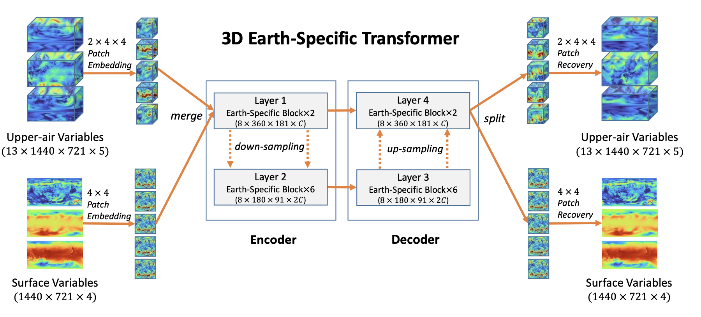
Key architectural features:
- Compact Encoder–Decoder Design: A lightweight 2-stage architecture with just 8 transformer blocks, balancing accuracy with efficiency.
- Sliding Window Attention: Based on the Swin Transformer, this mechanism captures local dependencies while reducing memory usage and FLOPs.
- High-Resolution 3D Inputs: Despite optimizations, the model still processes over 3000 GFLOPs, underscoring the computational demands of fine-grained global forecasts.
- Earth-Specific Positional Encoding: Unlike standard image models, atmospheric data is tied to physical geolocation (latitude, longitude, altitude). Pangu introduces spatially-aware encodings that reflect:
- Irregular grid spacing in latitude–longitude coordinates
- Latitude-dependent forces (e.g., Coriolis effect)
- Vertical variations in variables like pressure, temperature, and wind

Hierarchical Temporal Aggregation
Medium-range forecasts (up to 7 days) often require dozens or even hundreds of recursive prediction steps. Traditional autoregressive models suffer from cumulative error amplification in these settings. For example:
- FourCastNet uses 6-hour steps, requiring 28 recursive calls for a 7-day forecast.
- A 1-hour model would require 168 calls, increasing both training complexity and inference instability.
To resolve this, Pangu-Weather introduces a Hierarchical Multi-Step Forecasting approach:
- Trains four specialized models for predicting intervals of 1h, 3h, 6h, and 24h.
- During inference, a greedy scheduling algorithm selects the most efficient sequence of steps to minimize recursive depth.
- Example:
- 24h forecast → 1 call to 24h model
- 23h forecast → 3 × 6h + 1 × 3h + 2 × 1h

Benefits of this design:
- Minimizes error accumulation across time steps.
- Allows for efficient training via single-timestep supervision.
- Reduces GPU memory requirements, improving training stability versus multi-timestep strategies used in models like FourCastNet.
This design enables long-range AI forecasting to be more scalable, accurate, and efficient.
Training and Performance
Pangu-Weather was trained on hourly ERA5 reanalysis data spanning 1979 to 2021, making it one of the most data-rich AI weather models to date. Each variant of the model was trained for 100 epochs using 192 NVIDIA V100 GPUs over 16 days. Notably, the model had not fully converged by the end of training—suggesting that additional compute or training time could unlock further performance improvements.
Despite its compute-heavy training process, Pangu-Weather delivers forecasts at extraordinary speed. A full 24-hour global forecast can be produced in just 1.4 seconds on a single V100 GPU—making it over 10,000× faster than the ECMWF’s operational IFS system.
For evaluation, Pangu-Weather was benchmarked against both IFS and FourCastNet using ERA5 test years (2018, 2020, 2021) and tropical cyclone tracks from the IBTrACS archive. Results revealed substantial gains:
- The 3-day RMSE for 500 hPa geopotential height (Z500) dropped from 152.8 (IFS) to 134.5, and for 850 hPa temperature (T850) from 1.37 K to 1.14 K.
- These reductions translated into lead-time extensions of 10–15 hours over IFS and up to 36 hours over FourCastNet.
- At the surface, the 2-meter temperature RMSE was reduced to 1.05 K, outperforming both IFS (1.34 K) and FourCastNet (1.39 K).
- 10-meter wind prediction errors were also reduced by over 20%.
Unlike earlier AI models, which often produced coarse 6-hourly forecasts, Pangu-Weather offers hourly outputs, providing significantly better temporal resolution—critical for operational applications like nowcasting, disaster planning, and energy management.
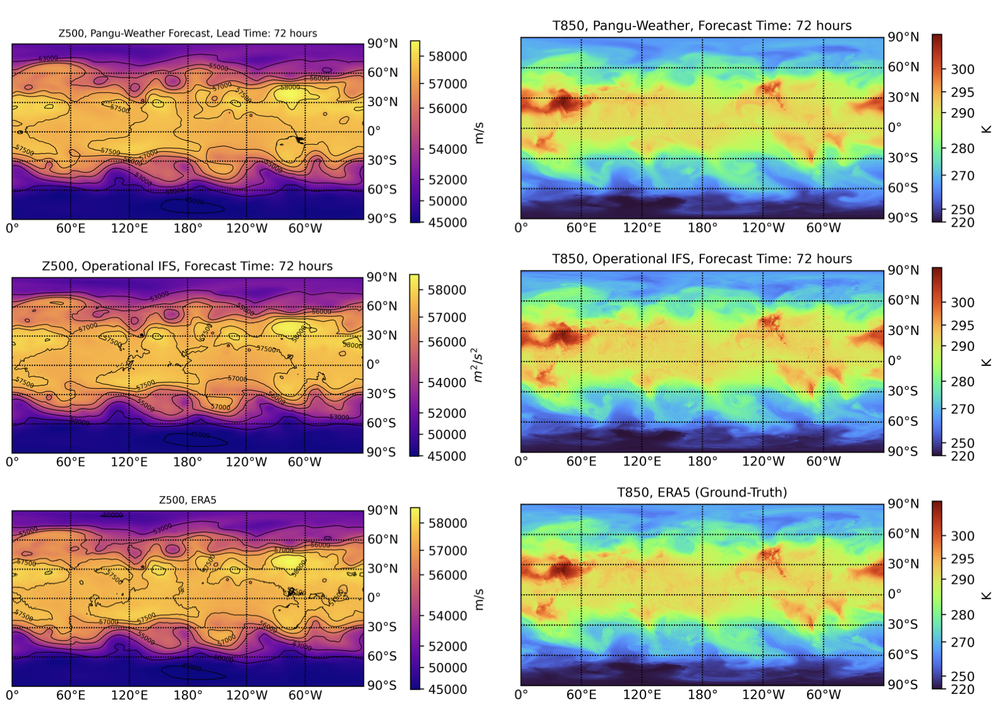
Left: Z500 (500 hPa geopotential height). Right: T850 (850 hPa temperature).
Forecast initialized at 00:00 UTC on September 1st, 2018.
Beyond numerical gains, Pangu-Weather also produces visually smoother and more realistic atmospheric fields, closely mirroring the ERA5 ground truth in both structure and intensity—especially for key variables like Z500 and T850.
Extreme Weather Prediction
Pangu-Weather excels at forecasting extreme events, outperforming traditional models in both statistics and real-world accuracy. Using the Relative Quantile Error (RQE) metric, Pangu shows:
- Less underestimation for Q500 (500 hPa specific humidity)
- Comparable performance to ECMWF-HRES on U10 (10m wind)
- Slightly weaker on U500 (500 hPa wind) at long ranges
Overall, it outperforms FourCastNet, thanks to its hierarchical design that reduces long-term forecast drift.
In cyclone tracking, Pangu was tested on 88 tropical cyclones (2018) using IBTrACS and TIGGE:
- 3-day track error: 120.3 km (vs. 162.3 km for ECMWF-HRES)
- 5-day track error: 195.6 km (vs. 272.1 km)
Two case studies highlight Pangu’s precision:
- Hurricane Michael (2018) – Landfall timing error: 3 hrs (vs. 18 hrs for ECMWF); better post-landfall tracking
- Typhoon Ma-on (2022) – Correctly predicted landfall over Philippines and Maoming, while ECMWF missed the region
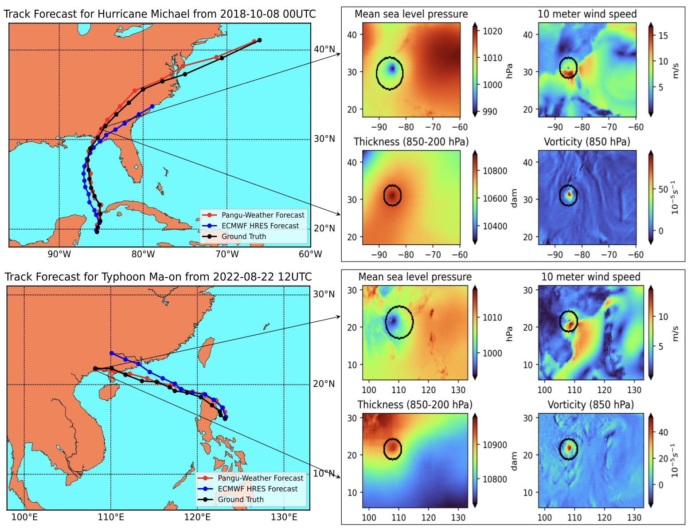
Right: Illustration of the cyclone tracking process using Pangu-Weather forecasts. Cyclone centers are identified based on four key variables: mean sea level pressure, 10 m wind speed, thickness between 850–200 hPa, and 850 hPa vorticity. The displayed fields correspond to the 72-hour forecast, with cyclone eye positions indicated by arrow tails.
3.3 GraphCast: GNN-Based Global Medium-Range Weather Forecasting
Launched by Google DeepMind in November 2023, GraphCast represents a significant leap in AI-driven global weather prediction. Using a Graph Neural Network (GNN) architecture, GraphCast models the Earth’s atmosphere as a structured, multi-scale graph, enabling it to capture both local interactions and global dynamics with unprecedented accuracy and efficiency.
For full technical details, see the original Science publication: Learning Skillful Medium-Range Global Weather Forecasting
Model Design and Architecture
At its core, GraphCast utilizes a multi-resolution icosahedral mesh, avoiding the pole distortion found in traditional latitude–longitude grids. The model follows a classic encoder–processor–decoder pipeline built entirely on a GNN framework.
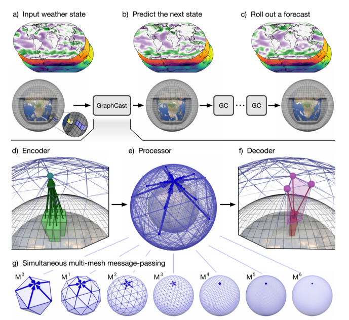
Panels (a–g) detail the input structure, autoregressive processing, and mesh refinement.
Key features include:
- Encoder: Converts 227 input variables (across 37 pressure levels) into graph node embeddings.
- Processor: A 16-layer GNN conducts message passing between nodes, capturing:
- Local-scale patterns (e.g., wind shear, convective systems)
- Global-scale dynamics (e.g., jet streams, Rossby waves)
- Decoder: Translates graph outputs back into a structured forecast field.
GraphCast employs multi-mesh message passing across seven levels (M⁰–M⁶), allowing it to represent atmospheric phenomena from planetary waves to tropical cyclones. The model forecasts autoregressively—predicting each timestep using outputs from the two prior steps (t and t−1)—ensuring temporal continuity and scalability.
Training and Performance
GraphCast was trained on 39 years of ERA5 reanalysis data (1979–2017), using a weighted mean squared error (MSE) loss to balance contributions from its 227 input variables. Training lasted around three weeks on 32 Cloud TPU v4s, employing mixed-precision computation and gradient checkpointing to maximize efficiency. The model processes a global grid at 0.25° resolution (~1 million spatial points per timestep) across 37 vertical pressure levels.
In benchmark testing across 1,380 combinations of forecast variables, levels, and lead times, GraphCast outperformed ECMWF-HRES in over 90% of cases. Within the troposphere, its advantage rose to 99.7%, showcasing its strong medium-range forecasting skill.
When evaluated head-to-head with Pangu-Weather—using the same spatial resolution and forecast start times—GraphCast achieved better performance on 99.2% of 252 benchmark metrics. It delivered 10–20% lower RMSE on surface variables (like 2m temperature and 10m wind) in early forecasts, and retained a 7–10% advantage at longer lead times. Pangu-Weather slightly edged out GraphCast on Z500 geopotential height at 6–12-hour lead times, with differences under 2%.

q500, t850, 10u, and 2t. Importantly, DeepMind found that training with more recent data (through 2020) significantly improved model skill when tested on 2021 conditions—especially in regions affected by climate variability (e.g., ENSO). This highlights a key advantage of AI models: their ability to adapt to changing climate baselines more easily than traditional, physics-constrained systems.
Extreme Weather Prediction
Accurately forecasting extreme weather events—including cyclones, heatwaves, and atmospheric rivers—has long challenged numerical models due to their fine-scale structure and sensitivity to global dynamics. GraphCast’s architecture enables it to overcome many of these limitations.
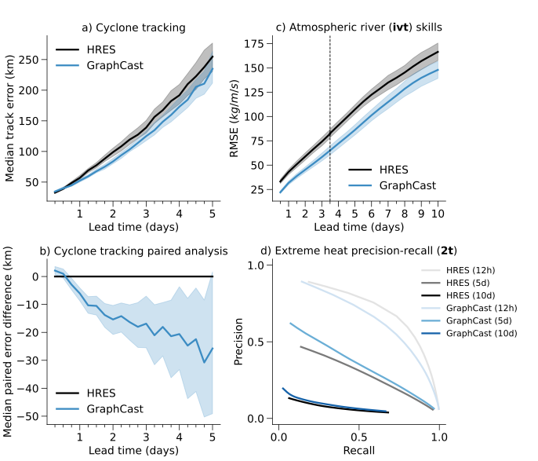
Key findings from GraphCast’s Nature evaluation:
- Cyclone Tracking: Lower median track error than ECMWF-HRES at all lead times.
- Atmospheric Rivers: More accurate prediction of Integrated Vapor Transport (IVT)—critical for rainfall and flood forecasting.
- Extreme Heat: Better detection of high-temperature anomalies at 2 meters, with higher precision and recall.
These results underscore GraphCast’s ability to bridge global and local weather patterns, making it a powerful tool for high-impact forecasting—with implications for disaster response, agriculture, and infrastructure planning.
3.4 Model Comparison
GraphCast, Pangu-Weather, and FourCastNet each represent a new generation of AI-powered weather forecasting tools. GraphCast leads in medium-range global prediction accuracy, Pangu-Weather balances speed with precision through hourly resolution, and FourCastNet excels in ultra-fast, ensemble-friendly forecasting. While each has its trade-offs, together they redefine what’s possible beyond traditional numerical weather prediction.
Model Comparison Table
| Feature | GraphCast | Pangu-Weather | FourCastNet |
|---|---|---|---|
| Developer | Google DeepMind | Huawei Cloud | NVIDIA |
| Published | Nov 2023 (Science) | July 2023 (Nature) | Aug 2022 (arXiv) |
| GitHub | GraphCast | Pangu-Weather | FourCastNet |
| Architecture | GNN | 3D Transformer (3DEST) | Fourier Neural Operator (AFNO) |
| Forecast Range | 10 days | 10 days | 7 days |
| Resolution | 0.25°, 6-hour | 0.25°, 1-hour | 0.25°, 6-hour |
| Speed | < 60s (10 days, TPU) | ~1.4s (24h, 1 GPU) | < 2s (7 days) |
Explore the Models on GitHub
4. Ethical and Societal Implications
AI-driven forecasts influence decisions from immediate disaster warnings to long-term climate adaptation. Ensuring these systems serve all communities equitably, remain intelligible to stakeholders, and operate under robust governance is critical to their ethical deployment and societal acceptance.
4.1 Regional Bias and Global Fairness
Most AI weather models are trained on rich observational archives in Europe and North America, leading to degraded performance in data-sparse regions such as sub-Saharan Africa or parts of South Asia. This imbalance threatens to widen gaps in resilience and disaster preparedness. To counteract it, researchers have proposed:
- Regionally weighted loss functions, which penalize errors more heavily where data are scarce;
- Domain adaptation and transfer learning, enabling models to generalize knowledge from well-observed to poorly observed settings;
- Open, collaborative data sharing, to expand and diversify training datasets globally.
Quantifying and correcting these disparities is the first step toward equitable AI forecasting
Source: McGovern et al., 2024
4.2 Explainability and Interpretability
Deep neural networks can outperform traditional methods but often at the cost of opacity. In high-stakes contexts—such as issuing hurricane or flood warnings—stakeholders need to understand the rationale behind predictions. Key interpretability techniques include:
- Saliency mapping and feature‐attribution methods, which highlight the input variables most influential to a forecast;
- Physics‐informed neural networks, embedding known scientific relationships directly into model architectures;
- Hybrid models, combining data-driven layers with conventional, physics-based forecast components.
These approaches open the black box, enable expert vetting of model behavior, and help maintain trust in AI‐assisted decisions
Sources: Reichstein et al., 2019, Samek et al., 2017
4.3 Accountability and Governance
As AI systems are increasingly embedded in weather forecasting—especially for critical tasks like early warnings and disaster response—the question of who is responsible when predictions fail becomes essential. Without clear accountability, errors may be ignored, public trust erodes, and lives could be at risk.
AI forecasts differ from traditional models because their decision processes can be opaque and decentralized. This makes assigning responsibility complex, yet necessary. Why does accountability matter?
-
Forecast failures have real consequences: A missed storm warning or false alarm can lead to loss of life, economic damage, or public confusion.
-
AI systems involve multiple actors:
- Developers design and train the models
- Data providers supply inputs
- Agencies make operational decisions Without defined roles, each can deflect blame in case of failure.
To manage this, both legal and ethical frameworks are emerging:
-
Legal mechanisms: The EU Artificial Intelligence Act (Regulation 2024/1689) is one of the first comprehensive efforts to govern high-risk AI applications. It mandates:
- Human oversight for critical systems
- Transparent documentation of model intent and limitations
- Auditability and performance monitoring
These provisions aim to prevent accountability gaps and ensure systems are safe and trustworthy.
Source: AI Act, EUR-Lex
-
Ethical frameworks: The IEEE Global Initiative promotes Ethically Aligned Design, a roadmap for responsible AI:
-
Inclusive stakeholder engagement in model development
-
Clear communication of risks, trade-offs, and uncertainties
-
Ethical guardrails to ensure alignment with public interest
-
4.4 Public Trust and Human Oversight
Even highly accurate AI forecasts must operate within a human-in-the-loop framework. During emergencies, expert meteorologists remain indispensable for contextualizing model outputs and conveying uncertainty. To foster public confidence:
- Transparency: Agencies should disclose model capabilities, training data coverage, and known limitations;
- Accessible communication: Forecasts must be translated into clear, non-technical guidance;
- Feedback mechanisms: Create channels for forecasters and users to report anomalies and improve models iteratively.
The WMO’s 2023 Open Consultative Platform report emphasizes that AI should enhance—not replace—expert judgment in meteorology.
Source: WMO OCP Report, 2023 (PDF)
5. Conclusion
The winds of change are sweeping through meteorology. Once dominated by physics-driven supercomputers, the field is now being reshaped by AI models trained on decades of atmospheric data. Innovations like GraphCast, Pangu-Weather, and FourCastNet are not only accelerating forecasts—they’re redefining the very language of weather prediction.
Yet with this power comes profound responsibility. As we entrust AI with forecasting the storms of tomorrow, we must ensure that these systems are transparent, fair, and accountable. The future of climate communication depends not just on precision, but on public trust and ethical design.
After all, in the eyes of these models, data is no longer abstract. It breathes with the heat of sunlit oceans, flows through the veins of jet streams, and rises with the pulse of pressure fronts. What once were just numbers on a grid are now living patterns—traces of storms, whispers of climate, and echoes of the world we call home.
“This is more than a computational breakthrough. It’s a new way of listening to the Earth—and a shared responsibility to understand it wisely.”
6. References
- Lam, R. et al. (2023). Learning skillful medium-range global weather forecasting. Science, 382(6676), 1140–1146. https://www.science.org/doi/10.1126/science.adi2336
- Bi, K. et al. (2023). Accurate and efficient global medium-range weather forecasting with 3D neural networks. Nature, 620, 529–535. https://www.nature.com/articles/s41586-023-06385-1
- Pathak, J. et al. (2022). FourCastNet: A global data-driven high-resolution weather model using adaptive Fourier neural operators. arXiv preprint. https://arxiv.org/abs/2202.11214
- ECMWF. ERA5 Reanalysis Datasets. https://www.ecmwf.int/en/forecasts/datasets/reanalysis-datasets/era5
- ECMWF. Operational Medium-Range Forecasting System (IFS). https://www.ecmwf.int/en/forecasts/documentation-and-support/medium-range-forecasts
- NOAA. IBTrACS – International Best Track Archive for Climate Stewardship. https://www.ncei.noaa.gov/products/international-best-track-archive
- ECMWF. TIGGE – THORPEX Interactive Grand Global Ensemble Project. https://www.ecmwf.int/en/research/projects/tigge
- GitHub – GraphCast (Google DeepMind) https://github.com/google-deepmind/graphcast
- GitHub – Pangu-Weather (Huawei Cloud) https://github.com/198808xc/Pangu-Weather
- GitHub – FourCastNet (NVIDIA) https://github.com/NVlabs/FourCastNet
- McGovern, A. et al. (2021). The Need for Ethical, Responsible, and Trustworthy Artificial Intelligence for Environmental Sciences. arXiv. https://arxiv.org/abs/2112.08453
- Ethics in Climate AI (2024). PLOS Climate. https://journals.plos.org/climate/article?id=10.1371/journal.pclm.0000061
- AI Weather Forecasts and Public Reliance (2025). Sustainability Directory. https://sustainability-directory.org/ai-weather-forecasting
- QL Space (2025). The Ethics of AI and Satellite Data in Weather Forecasting. https://www.qlspace.com/news/the-ethics-of-ai-and-satellite-data-in-weather-forecasting
- Chen, R. et al. (2023). Identifying and Categorizing Bias in AI/ML for Earth Sciences. Bulletin of the American Meteorological Society. https://journals.ametsoc.org/view/journals/bams/104/2/BAMS-D-21-0286.1.xml